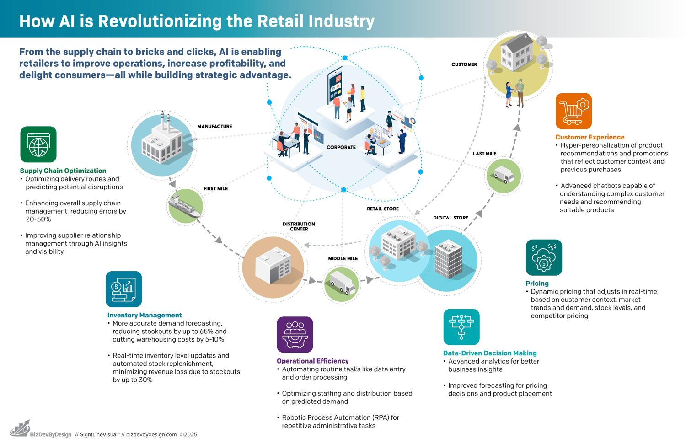

A SightLineVisual executive brief I authored and published through BizDevByDesign in 2025. It follows a product from the factory through distribution, stores, and the last mile to the customer, and marks the six places retailers are putting AI to work along the way.
SightLineVisual is my series of one-page briefs for leaders who need to see a technology landscape before they decide what to do about it. The point of this one is that AI in retail is not a single project. It shows up at every handoff in the value chain, and each use case has its own owner, its own data, and its own adoption challenge.
Click the visual to open it full screen, then click again or use Zoom to read the detail.

The map is the easy part. The value depends on whether the teams who own each step change how they work, which is the part of the problem I spend my time on.
The enterprise AI stack page maps the platforms these retail use cases run on, and where the value stalls above the license.
Enterprise AI stack →The change and adoption record behind turning a use case into a new way of working that people keep.
AI adoption & change →If you are sorting out where AI belongs in a retail or consumer business, and who has to change for it to pay off, that is a conversation I would like to have.
patrick.a.dodson@gmail.com →